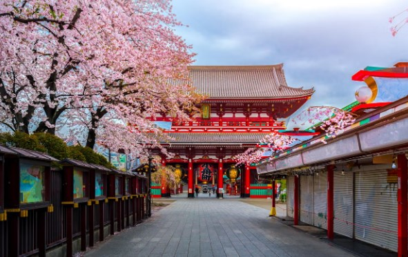
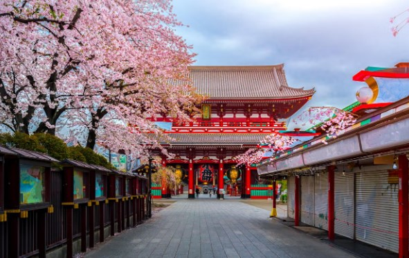
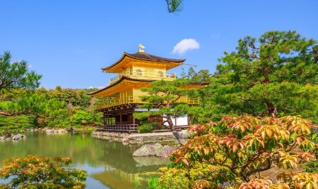
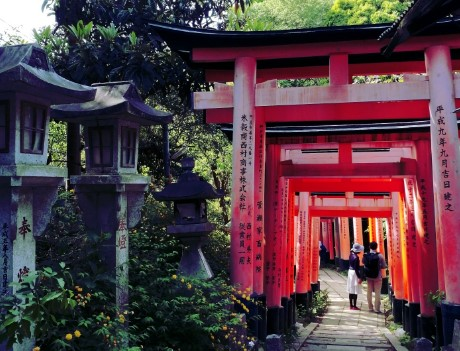
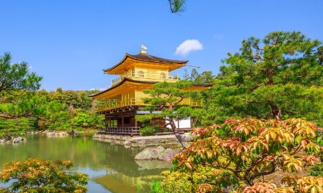
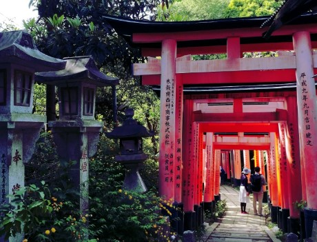

Japonia
Japonia, kraj wschodzącego słońca, to fascynujące miejsce, które łączy w sobie starożytną tradycję i nowoczesność. Znana z pięknych krajobrazów, kultury, sztuki, oraz wyjątkowej kuchni, Japonia przyciąga podróżników z całego świata.
Japonia, kraj wschodzącego słońca, to fascynujące miejsce, które łączy w sobie starożytną tradycję i nowoczesność. Znana z pięknych krajobrazów, kultury, sztuki, oraz wyjątkowej kuchni, Japonia przyciąga podróżników z całego świata.
Shintō to pierwotna religia Japonii, która koncentruje się na czczeniu kami, czyli duchów zamieszkujących naturę, przedmioty i przodków. Shintō nie ma założyciela, świętej księgi ani ściśle określonej doktryny, a jego praktyki obejmują rytuały i ceremonie mające na celu utrzymanie harmonii między ludźmi a kami. W Japonii istnieje wiele świątyń shintoistycznych, gdzie ludzie składają ofiary, modlą się i uczestniczą w festiwalach.
Buddyzm został wprowadzony do Japonii w VI wieku n.e. z Korei i Chin. Wpłynął znacząco na japońską kulturę, sztukę i filozofię. Istnieje wiele szkół buddyzmu w Japonii, w tym Zen, Nichiren, Tendai i Shingon. Buddyzm w Japonii często współistnieje z Shintō, a wiele osób praktykuje rytuały obu religii.
Karate to japońska sztuka walki, która koncentruje się na uderzeniach, kopnięciach, blokach i technikach unikania. Powstała na Okinawie, a jej nazwa oznacza "pustą rękę", co odzwierciedla walkę bez użycia broni. Karate rozwija siłę, szybkość, precyzję oraz dyscyplinę mentalną.
Judo, co tłumaczy się jako "łagodna droga", jest nowoczesną japońską sztuką walki i sportem olimpijskim. Skupia się na rzutach, trzymaniach, duszeniach oraz dźwigniach. Założone przez Jigoro Kano, judo uczy efektywnego wykorzystania energii przeciwnika i rozwija sprawność fizyczną oraz ducha walki.
Aikido to sztuka walki stworzona przez Morihei Ueshibę, której nazwa oznacza "drogę harmonii z energią". Aikido kładzie nacisk na obronę bez zadawania obrażeń przeciwnikowi poprzez techniki okrężne, dźwignie i rzuty. Uczy harmonii, równowagi i kontrolowania własnej energii.
Kendo, "droga miecza", to współczesna japońska sztuka walki z mieczem. Uczestnicy używają bambusowych mieczy (shinai) oraz noszą ochronne zbroje (bogu). Kendo promuje dyscyplinę, szacunek, koncentrację i ducha walki. Jest to także popularny sport, który kultywuje tradycje samurajskie.

Haiku to tradycyjna japońska forma poetycka, charakteryzująca się prostotą i głębią. Składa się z trzech wersów, liczących odpowiednio 5, 7 i 5 sylab. Haiku zazwyczaj nawiązuje do natury i zmieniających się pór roku, starając się uchwycić ulotne chwile i emocje.
furuikeya
kawazu tobikomu
mizuno oto
Stara sadzawka,
Żaba wskakuje –
Plusk wody
hatsushigure
sarumo kominowo
hoshigenari
Pierwszy deszcz zimowy,
Nawet mała małpa
Pragnie płaszcza
hatsuyukiya
itsumono michiwo
kodomorato
Pierwszy śnieg,
Zawsze tą samą drogą
Z dziećmi
kaki kueru
kanega nakunari
houryuuji
Jem persymony,
Dzwon rozbrzmiewa –
Świątynia Horyu
Tokio, stolica Japonii, to tętniąca życiem metropolia, gdzie tradycja spotyka się z nowoczesnością. Jest to jedno z najważniejszych centrów finansowych i kulturalnych na świecie, oferujące niezliczone atrakcje dla każdego odwiedzającego. Tokio to miasto, które nigdy nie zasypia, oferując niekończące się możliwości eksploracji, niezapomniane doznania kulinarne i niesamowite kontrasty między przeszłością a przyszłością. Każda wizyta odkrywa nowe oblicze tego fascynującego miasta.
 

Kioto, dawna stolica Japonii, jest znane ze swoich przepięknych świątyń, ogrodów i tradycyjnych drewnianych domów. Warto odwiedzić świątynię Kinkaku-ji (Złoty Pawilon), świątynię Fushimi Inari Taisha z tysiącami bram torii oraz dzielnicę gejsz Gion. Wiosną miasto jest magiczne dzięki kwitnącym wiśniom.
 



Nara, pierwsza stała stolica Japonii, jest domem dla wielu historycznych skarbów, w tym gigantycznego posągu Buddy w świątyni Tōdai-ji oraz licznych wolno chodzących jeleni w parku Nara. Świątynia Kasuga Taisha z setkami kamiennych i brązowych lampionów to kolejny punkt obowiązkowy.